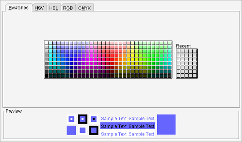

Cor da seleção
Caminho de menu: Definições > Definições > Cor da seleção
Altere a cor que indica o item selecionado.

Tem muitas maneiras de selecionar a cor. "Swatches" é o separador mais simples de usar, uma vez que pode simplesmente clicar
numa das cores da tabela. Os outros separadores permitem muito mais precisão, ideais se procura realmente uma cor exata.
A pré-visualização, em baixo, mostra a sua seleção. Clique em Gravar quando estiver satisfeito.